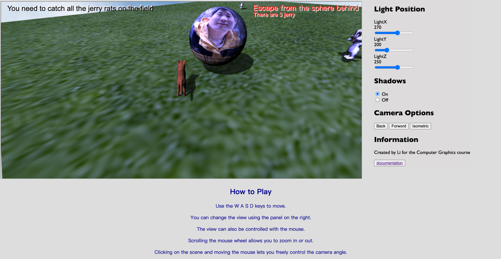
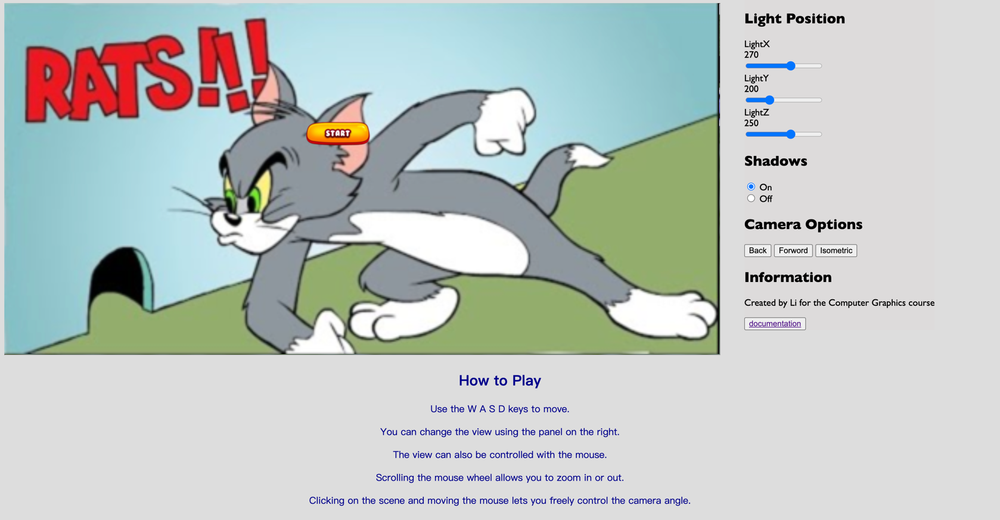
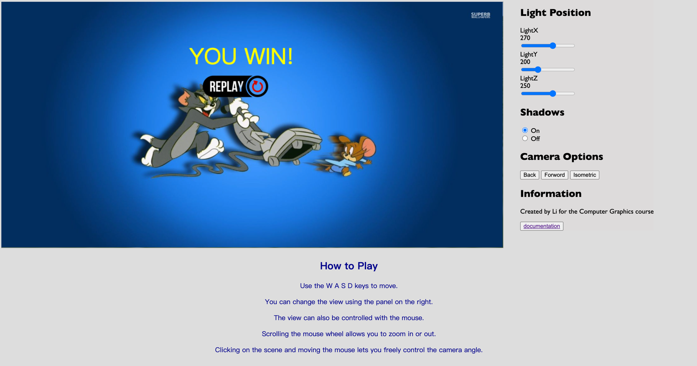
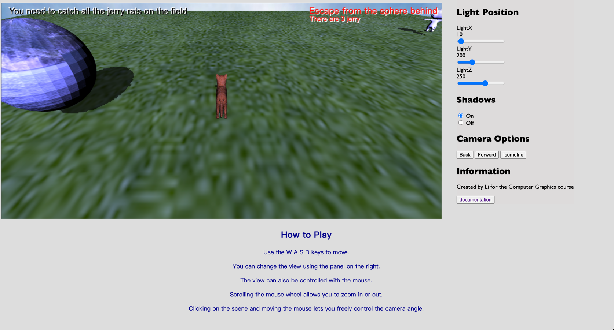
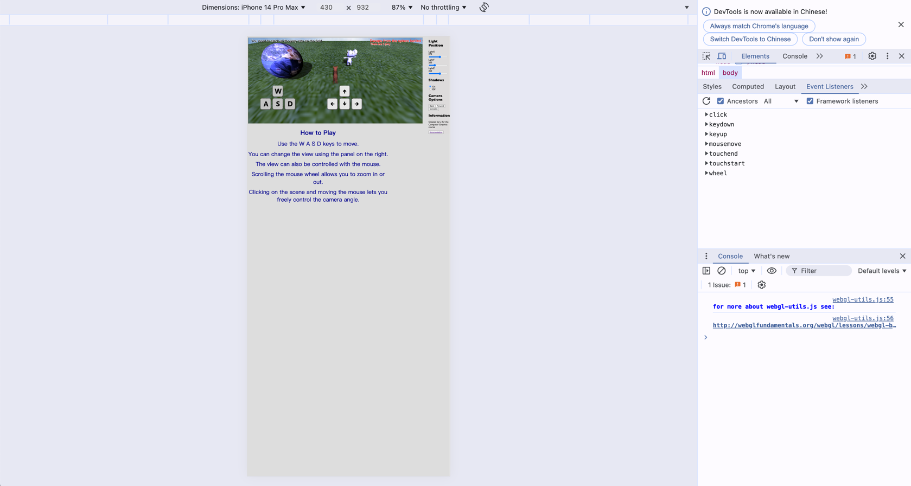

Application Description and Usage
Tom and Jerry is a Disney cartoon we have loved since childhood, and their relationship is both antagonistic and friendly, with love and rivalry intertwined.
In this game, the player takes on the role of Tom the cat, who needs to find all the mice on the field while avoiding being chased by the owner.
If the owner catches Tom and Tom hasn't caught all the mice, he will be punished, and the game will end.
The objective of the game is to catch all the mice within a limited area while avoiding the owner's chase. But be careful! If you step out of the map, you'll be eliminated!
Explanation of Choices Made and WebGL Features Used
Various techniques were used to create the scene.
3D Objects
A skybox was implemented using textures and perspective view to create the feeling of an infinite world.
Then, a plane with a grass texture was created to represent an open environment, making the setting more “alive.”
The size of the plane matches the size of the map. In fact, leaving the plane corresponds to entering the "Game Over" screen, and players can restart the game using the "Retry" button.
The scene consists of multiple meshes imported from Wavefront OBJ format files.
The meshes for Tom the cat and Jerry the mouse are quite complex (sourced from sketchfab.com).
To import the meshes into the scene, the loadObj function from the utils file was used.
Textures
Textures were applied to every object in the scene.
The texture implementation started from example code provided during the course.
Textures are created using WebGL functions “gl.createTexture()” and “gl.texImage2D()”, which apply the “mipmap” technique to images when possible. If not possible, default parameters are set to handle them.
Finally, Tom's owner was created by applying my photo as a texture to a sphere object.
Lighting and Shadows
I attempted to simulate natural light as much as possible by placing a light source above the scene. The light is directional, utilizing depth textures to calculate which objects are in shadow (and on which side).
The user can modify the light source's position along its axes.
I set a bias to limit pixelated shadow effects known as “shadow acne.”
Users can also choose not to render shadows to reduce the workload when running the game on less powerful computers.
One issue with lighting the scene using this technique is that the shadows appear somewhat pixelated (despite the low bias).
This is because the objects have a low polygon count, making them appear less smooth when shadows are enabled.
To improve the visual effect, increasing the polygon count is one solution, or alternatively, implementing an efficient shadow algorithm to refine the shadow shapes.
Movement and Collisions
The movement of the cow in the scene is based on the cg-car2.js file observed during the course.
The physics used for movement is a simplified version of the car animation functions, without the need to manage wheels.
Movement within the map has some collisions.
By using the position of the controlled character, it is possible to determine if a collision with the enemy chasing us has occurred.
The player character's position is also used to create the owner's tracking algorithm, where the owner updates their direction based on Tom's position along the x and z axes, modifying the owner's position in each frame.
Two types of collisions have been implemented:
- Collisions with the owner
- Collisions with Jerry
When the owner catches the player, the game enters a game-over state, showing the appropriate screen, and allowing the player to restart the game.
Collisions with Jerry cause them to disappear. Once all the Jerry mice are collected, a specific control determines the player's victory. Similarly, a view will appear on the screen informing the player of their success and allowing them to restart.
The barrels in the scene rotate around the y-axis and x-axis, using functions from the library “m4.js”:
“m4.yRotate(m, angleInRadians, dst)”
“m4.xRotate(m, angleInRadians, dst)”
Interaction with the Interface
There are two types of interactions:
- In-game interaction
- Menu interaction
In-game interaction can be achieved in the following ways:
- Via keyboard
- Via mouse
- Via touch screen (on mobile devices)
Desktop Version
When running the program on a computer, the W, A, S, D keys are used to move the cow (a convention typically used in games with mouse and keyboard input).
The camera can be controlled with the arrow keys and the mouse. Additionally, the mouse wheel can be used to zoom in or out the camera's distance from the character.
The interface includes a panel on the right with various buttons and sliders. These buttons allow the camera to be set to three different modes:
- Rear View
- Front View
- Isometric

The sliders provide the ability to move the light source along the x, z, and y axes (as previously mentioned).
This feature's effect is more evident when shadows are enabled. Of course, there is an option to choose whether to display shadows or not.
Mobile Version
To allow users to use the application on smartphones, images representing the "WASD" keys and the "arrowUp, arrowLeft, arrowDown, arrowRight" key layout (sourced from Google images) were inserted into the scene.
These images are placed on the left and right sides of the canvas, respectively, to simulate controllers, with the right thumb used to move the character and the left thumb to control the camera.
Special Features and Future Developments
The special feature of this software is the chase mechanism it proposes. In fact, the game is well-balanced with the enemy's speed, often leading to situations where enemies block the player's path, resulting in a game over.
Each time the game starts, the positions of Jerry mice and the enemy's spawn are randomized.
To improve the software in the future, the following features could be implemented:
- More complex terrain maps
- More Jerry mice as targets, with random irregular movement.
- Replace the sphere representing the owner with a more interesting obj.